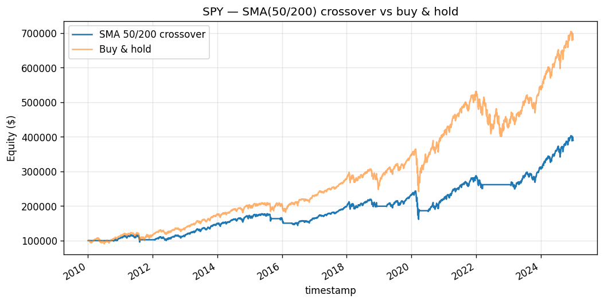

What a 50/200 golden cross really is: a difference of two low-pass filters, and the delay you pay for it.
Compiled 2026-05-28 · SPY daily bars, 2010–2024
We study the canonical 50/200-day simple-moving-average (SMA) crossover applied to SPY daily adjusted bars over 2010–2024 (3,774 bars). We treat the rule not as folklore but as a linear filtering problem: each SMA is a finite-impulse-response (FIR) low-pass filter whose Dirichlet-kernel frequency response carries a constant group delay of \((n-1)/2\) samples, and the crossover difference \(D_t=\mathrm{SMA}_{50}-\mathrm{SMA}_{200}\) is a difference-of-low-pass — i.e. a band-pass — estimator of local trend. From this lens we derive the rule's two structural costs: turnover-driven whipsaw in ranging regimes, and lag-induced drawdown because the exit signal inherits the slow filter's ~100-day delay. The backtest, executed one bar lagged with a 1.5 bp round-trip cost, returns +9.7% annualized, Sharpe 0.75, Sortino 1.10, hit rate 55.9%, and a deep −33.7% maximum drawdown. We show the Sharpe carries a standard error near 0.29 (\(t\approx2.6\)); but with the usual in-sample, single-asset, single-rule caveats, the apparent edge is statistically fragile and economically consistent with simply harvesting the trend risk premium rather than beating it.
Keywords. trend following, moving-average crossover, FIR filter, group delay, Sharpe ratio inference, time-series momentum, transaction costs.
Trend following is the oldest quantitative bet in markets: that prices, once moving, tend to keep moving, so a rule that goes long after strength and steps aside after weakness should earn a premium for bearing the risk that trends reverse. The moving-average crossover is the textbook embodiment of this idea. When a fast average of price rises above a slow one — the celebrated "golden cross" — recent prices sit above their longer-run level, which we read as a positive local trend; when the fast falls below the slow — the "death cross" — we read weakness and move to cash. This paper takes the simplest, most widely cited version, the 50-day versus 200-day SMA on the S&P 500 ETF (SPY), and dissects it.
Our purpose is deliberately modest and pedagogical. This is the repository's hello-world: a naive SMA crossover is well established not to beat buy-and-hold after costs over long horizons, and we do not claim otherwise. What the model earns its place by is exercising the full pipeline — load, signal, backtest, metrics, plot — and by giving us a clean object on which to develop the mathematics that every later paper reuses. The crossover is, after all, a linear filter, and viewing it that way makes its strengths (it really does smooth noise and ride large trends) and its pathologies (delay and whipsaw) fall out of one diagram rather than out of anecdote.
The hypothesis we test is precise: when SPY's 50-day SMA is above its 200-day SMA the market is trending up and being long earns positive return; on a death cross, step aside; no shorting. Sections 3–4 build the filter-theoretic and statistical machinery; Section 5 reports results; Sections 6–7 interpret and bound them.
We use SPY daily adjusted bars retrieved from yfinance over 2010-01-01 to 2024-12-31, yielding \(N=3{,}774\) trading bars. The adjusted close folds dividends and splits into a single total-return price series \(P_t\), so the simple return \(R_t = P_t/P_{t-1}-1\) and the log return \(r_t=\ln(P_t/P_{t-1})\) are total returns. SPY is among the most liquid instruments in existence; market-impact and borrow frictions are negligible at the swing horizon, which lets us isolate the rule's own behavior rather than execution noise. The 200-day average requires a 200-bar warm-up, so the first signal is emitted only once both averages are defined; equity and metrics are computed over the post-warm-up sample.
The \(n\)-day simple moving average is
\begin{equation} \mathrm{SMA}_n(t)=\frac1n\sum_{k=0}^{n-1}P_{t-k}, \end{equation}a linear time-invariant filter with finite impulse response \(h_k=1/n\) for \(0\le k whose magnitude \(|H_n(\omega)|\) peaks at the zero frequency and decays as \(\omega\) grows: the SMA is a low-pass filter that passes the slow-moving trend and attenuates high-frequency noise. Two features of \(H_n\) matter for trading. First, the linear phase factor \(e^{-i\omega(n-1)/2}\) means the filter has constant group delay Every frequency component is delayed by the same \((n-1)/2\) bars, so the SMA does not distort shape — it merely shifts the signal back in time. The 50-day SMA therefore lags price by \(\approx 24.5\) trading days and the 200-day by \(\approx 99.5\) days. Smoothing is bought with delay, and there is no free lunch: a longer window suppresses more noise but lags more. Second, the kernel has sidelobes — the \(\sin(n\omega/2)\) numerator forces \(|H_n|\) to ripple rather than roll off monotonically — so the SMA is an imperfect low-pass that leaks some high-frequency energy back into the smoothed series. Let \(f=50 which is itself an LTI filter with impulse response \(g_k=h^f_k-h^s_k\). Because both terms are low-pass, their difference is a band-pass filter: the zero-frequency (constant-level) component cancels — a flat price gives \(D_t=0\) — and the very-high-frequency noise is attenuated by both averages, so what survives is the medium-frequency content. Operationally, \(D_t>0\) precisely when the recent (fast-averaged) price level sits above the longer-run (slow-averaged) level, which is a discrete proxy for a positive local slope, i.e. an up-trend. A difference of two low-pass filters is a band-pass filter that estimates trend; the crossover rule simply thresholds its sign. The signal and target weight are accordingly long on a golden cross, flat on a death cross, never short. We adopt the catalogue's shared evaluation battery (full definitions in where \(c\) is the per-unit round-trip cost. We charge \(c=1\,\text{bp}\) commission \(+\,0.5\,\text{bp}\) slippage \(=1.5\,\text{bp}=1.5\times10^{-4}\) per unit of turnover. On bars where the position changes, the fill is taken at that bar's open rather than the prior close, so the entry bar earns its open-to-close return in place of \(R_t\); this is the catalogue-wide convention and avoids crediting the rule with the move from which its own signal was formed. Compounded equity is With the risk-free rate set to zero, \(P=252\) periods per year and \(N\) bars, we report: the annualized return \(\bigl(\prod_t(1+r^s_t)\bigr)^{P/N}-1\); the annualized Sharpe \(\widehat{SR}=(\bar r^s/s)\sqrt P\) with sample mean \(\bar r^s\) and sample standard deviation \(s\); the Sortino ratio \((\bar r^s/\sigma_d)\sqrt P\) using downside deviation the maximum drawdown and the hit rate, the fraction of active bars (\(w_{t-1}=1\)) with \(r^s_t>0\). Two cost-side quantities organize the discussion. Define realized turnover as the number of regime flips, so the total cost drag is simply \(c\,\Upsilon\). A buy-and-hold benchmark pays \(c\) once (\(\Upsilon=1\)); the crossover pays it on every round trip through the zero line of \(D_t\).  Backtest metrics, 50/200 SMA crossover on SPY, 2010–2024 (\(N=3{,}774\) bars, \(c=1.5\) bp, one-bar-lagged execution). The strategy compounds at +9.7% per year with an annualized Sharpe of 0.75 and a Sortino of 1.10, the latter exceeding the former because the downside-only deviation \(\sigma_d\) is smaller than the full standard deviation — the rule clips some left-tail bars by sitting in cash. The hit rate of 55.9% on active bars is a thin majority, as one expects from a trend filter that earns its keep from a few large directional moves rather than from being right often. The equity curve rides SPY's long post-2010 bull legs while flattening out during the intervals when \(D_t<0\). The headline tension is the −33.7% maximum drawdown sitting beside a respectable Sharpe; the next section shows these are two faces of the same delay. In a mean-reverting or ranging regime the price oscillates without net drift, so the band-pass output \(D_t\) hovers around zero and crosses it repeatedly. Each crossing flips \(w_t\) by one unit and, via Eq. (9), adds \(c\) to the cost drag — yet flips clustered in a flat market are flips into trades that go nowhere. This is whipsaw: the rule pays the round-trip cost \(c\Upsilon\) and gives up the bid–ask repeatedly while the underlying does not trend. Because buy-and-hold pays \(c\) exactly once, turnover-driven cost is the dominant friction relative to the benchmark, and it is incurred precisely in the regimes where the trend hypothesis is false. The 50/200 pair is comparatively slow and so whipsaws less than a 5/20 pair would, but the mechanism is the same and is the first reason the rule struggles to beat buy-and-hold net of costs. The exit signal — the death cross — depends on the 200-day SMA, which by Eq. (2) carries a group delay of \(\approx 100\) bars. In a sharp drawdown the price peaks and rolls over long before the slow average does, so the death cross fires roughly a quarter after the top. The strategy therefore structurally participates in the early leg of every crash; it cannot do otherwise without a faster (and noisier, more whipsaw-prone) exit. This is the direct cause of the −33.7% maximum drawdown. Crucially, the same delay that produces deep drawdowns is what produces the positive Sharpe: the filter rides the right side of large, persistent trends precisely because it is slow enough not to be shaken out by them. Delay buys trend capture and pays for it in late exits — one knob, two consequences. Is a Sharpe of 0.75 real? Under the iid approximation of Lo (2002), the standard error of an annualized Sharpe is \(\mathrm{SE}(\widehat{SR})\approx\sqrt{(1+\tfrac12 SR^2)/T}\) with \(T\) the sample length in years. With \(SR=0.7451\) and \(T\approx15\), so the implied \(t\)-statistic is a one-sided \(p\approx 0.005\). Taken at face value this looks decisively non-zero. It is not, and the caveats are not cosmetic. The deeper point is that the iid SE ignores both the autocorrelation in strategy returns (which inflates the true SE) and, more importantly, the selection over rules and parameters that the number 0.75 already reflects. The 50/200 pair is not a hypothesis drawn before seeing the data; it is the survivor of a century of practitioner search. A defensible reading is that the strategy harvests the same risk premium an investor would earn by holding SPY, repackaged with a different drawdown profile, and that the cost \(c\Upsilon\) plus the lagged exits leave little or no genuine alpha on top.1 Several limitations bound the result and point to natural extensions. No shorting. The weight is constrained to \(\{0,1\}\), so the rule cannot profit from down-trends, only avoid them. Allowing \(w_t\in\{-1,0,1\}\) would test the trend hypothesis symmetrically but would also expose the strategy to the well-documented asymmetry of equity-index trends (sharp down, grinding up). FIR versus IIR. The SMA's flat weights waste degrees of freedom — distant and recent prices count equally. The exponential moving average (EMA), an infinite-impulse-response (IIR) filter with geometrically decaying weights, achieves comparable smoothing with markedly less group delay, mitigating the late-exit problem at the cost of a longer (theoretically infinite) memory and nonlinear-phase distortion. The popular MACD line is exactly such a construction — \(\mathrm{EMA}_{12}-\mathrm{EMA}_{26}\), itself a difference-of-moving-averages band-pass, structurally identical to our \(D_t\) but built from EMAs. Alternative trend operators. Donchian channels (breakout of an \(n\)-day high/low) implement trend detection through order statistics rather than linear filtering and react differently to gaps and ranges. More broadly, the crossover is one instance of time-series momentum, which Moskowitz, Ooi & Pedersen (2012) document as a pervasive, cross-asset return predictor — suggesting the right framing is not "does this rule beat the index" but "how efficiently does this rule load on a known momentum risk premium." Faber (2007) makes the tactical-allocation case for exactly such moving-average timing across asset classes.The crossover statistic is a band-pass trend estimator
Backtest Protocol and Performance Metrics
methodology.md); here we state only what we report. Execution is lagged one bar — a signal observed at the close of \(t\) is realized over \(t\to t+1\) — so the net per-bar strategy return isResults
Metric Value Annualized return +9.7% Sharpe ratio (annualized) 0.7451 Sortino ratio (annualized) 1.1003 Maximum drawdown −33.7% Hit rate (active bars) 55.9% Bars 3,774 Discussion
Whipsaw and turnover
Lag-induced drawdown
Statistical significance of the Sharpe
Limitations and Extensions
References